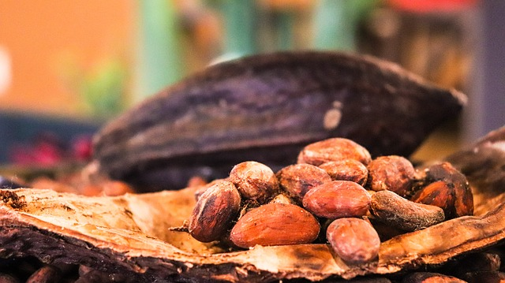

Cocoa beans are little beans found in the pods that grow on cacao (cocoa) trees. The pods are orange and are about as big as a small pumpkin. They look like a football with some of the air out of it.
When the pods are ready to be picked, they are cut open so the beans inside can be taken out and roasted (baked). Before the cocoa bean is roasted, it has over three hundred different flavors.
Roasting the beans dries them so they can be crushed into cocoa (chocolate powder). So I guess you can say chocolate grows on trees…sort of. Plain cocoa is very bitter. It’s not really chocolate until you add sugar.
Every year, people all over the world eat or drink 2 BILLION pounds of chocolate every year. So…if every cocoa tree produces enough beans to make only 2 pounds of chocolate a year, 1 BILLION cocoa trees are needed every year to keep the world supplied in chocolate.
The Aztecs took chocolate admiration to another level. They believed cacao was given to them by their gods. Like the Mayans, they enjoyed the caffeinated kick of hot or cold, spiced chocolate beverages in ornate containers, but they also used cacao beans as currency to buy food and other goods. In Aztec culture, cacao beans were considered more valuable than gold.
Aztec chocolate was mostly an upper-class extravagance, although the lower classes enjoyed it occasionally at weddings or other celebrations.
Perhaps the most notorious Aztec chocolate lover of all was the mighty Aztec ruler Montezuma II who supposedly drank gallons of chocolate each day for energy and as an aphrodisiac. It’s also said he reserved some of his cacao beans for his military.